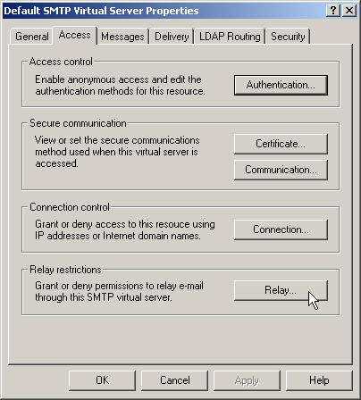
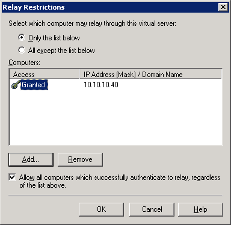

Configure email server (smart host) to accept relays from the Cority SMTP server
Go to the “smart host” email server and configure it to accept relays from the Cority SMTP server. To do so:
- Open the properties of the Default SMTP Virtual Server.
- On the Access tab, click Relay.

- Click Only the list below, click Add, and then enter the IP address of the Cority SMTP Server.
